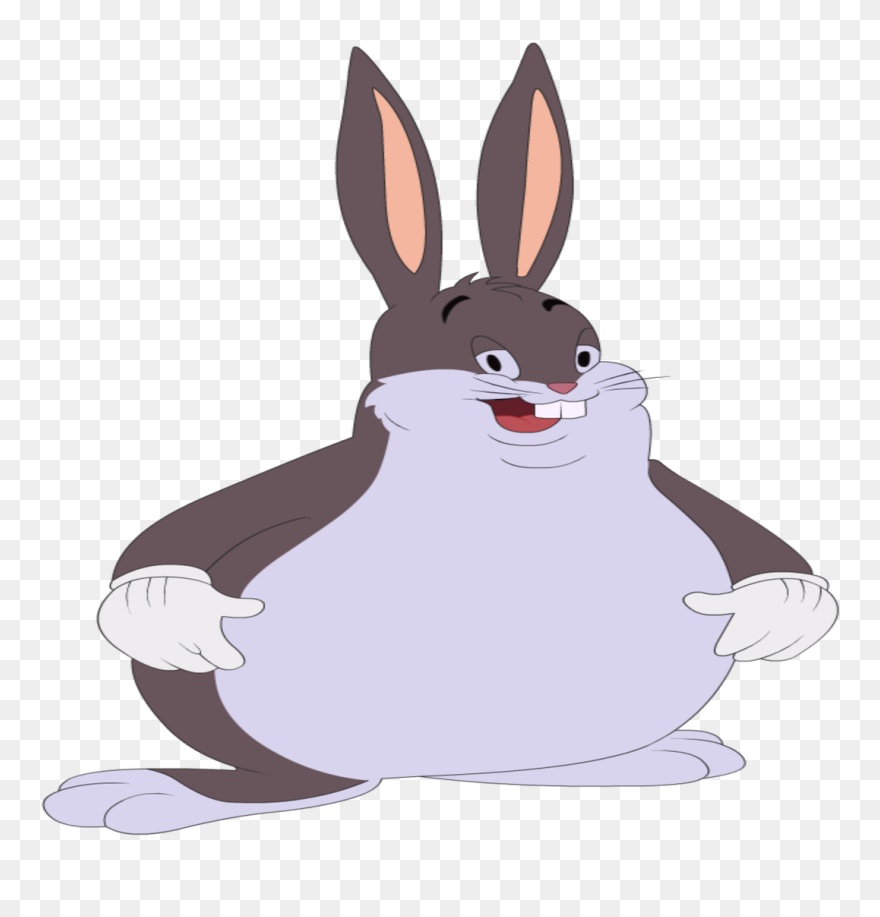

Big Chungus NFT Gallery
$100,000 each! pay pal me on family and friends
scroll down to see all EPIC nftsss
start countdown
Your browser does not support the audio element.
Your browser does not support the audio element.
Your browser does not support the audio element.
Your browser does not support the audio element.
